comp operation
component selector The component into which to split:
| f | faces |
| e | edges |
| fe | face edges |
| v | vertices |
| fv | face vertices |
| g | groups |
| m | materials |
| h | holes |
scopeAlignment selector
| zUp | Default. Pivot and scope are aligned. See below. |
| noAlign | Pivot and scope do not change. The scope size and position are adjusted though to fit the component. |
selector selector bool float
| front, back, left, right, top, bottom | The y-normals of the components are analyzed by classifying their directions into the corresponding quadrants (in relation to the scope coordinate system of the current shape). | ||||||||||
| object.front, object.back, object.left, object.right, object.top, object.bottom, object.side | The y-normals of the components are analyzed by classifying their directions into the corresponding quadrants (in relation to the object coordinate system of the current shape). | ||||||||||
| world.south, world.north, world.west, world.east, world.up, world.down, world.side | The y-normals of the components are analyzed by classifying their directions into the corresponding quadrants (in relation to the world coordinate system). | ||||||||||
| vertical, horizontal, aslant, nutant | The y-normals are analyzed in relation to the xz-plane of the current shape's local coordinate system. The the angle between normals and xz-plane is used to classify the components. The exact ranges are (in degrees):
|
||||||||||
| side | Selects all but the horizontal components. | ||||||||||
| border, inside | Components at the border of or fully inside the geometry respectively. Border edges are connected to only one face; border faces contain one or more border edges; border vertices are start or end point of one or more border edges. This selector does not work on holes. | ||||||||||
| eave, hip, valley, ridge | These selectors work on edges only and are designed to be used in conjunction with roofs. See the section below for more details. | ||||||||||
| street.front, street.back, street.left, street.right, street.side | If the streetWidth attribute is available on the initial shape, these selectors can be used to identify street-facing components. See the section below for more details. | ||||||||||
| all | Selects all components. | ||||||||||
| isTagged(tagQuery), isTagged(tagQuery,subcomponent) |
Selects components whose tags match the given tagQuery. See the section below for more details.
tagQuery string subcomponent selector
Tags stored on a face also identify its edges and vertices, while tags stored on an edge also identify its two vertex endpoints.
|
||||||||||
| logical expression bool | Selects all components for which the expression evaluates to true. User-defined functions as well as the above selectors can be used in the expression. | ||||||||||
| index float | Selects the index-th component (0-based). |
operator
The operator defines how the selected components are combined to generate successor shapes.
| : | Each selected component is put into a new shape. |
| = | All selected components are combined into one new shape. |
| =: | Each connected set of selected compontents is combined into a new shape. |
operations
A sequence of shape operations to execute on the newly created shape.
The comp operation (component split) allows to divide a shape into its topological components, which are either faces, edges, face edges, vertices, groups, materials or holes. The components can be selected using either their index or a set of selectors. Group and material components satisfy a specific selection keyword if at least one geometric component (usually a face) satifies it. The selected components are transformed to a new shape and processed by a sequence of shape operations. Depending on the operator, either one shape is created for each individual selected component (:), one shape is created for the whole set of selected components (=) or one shape is created for each connected subset of selected components (=:). Two components are connected if their faces share an edge. Components without faces are connected if they share a vertex.
The selection parameters of a component split work in a excluding manner: if a parameter has selected a specific component, this component cannot be part of another selection (from left to right).
The local coordinate systems (pivot and scope) of the newly generated shapes are aligned according to the geometry's topology. The component split is one of the few shape operations which manipulate the pivot of a shape. This behavior is deactivated when scopeAlignment is set to noAlign.
| f | In the case of a face component split, the x-axis is directed as the first edge of the face and the z-axis points along the face normal. The pivot is positioned at the first vertex of the first edge of the face; the scope is the bounding box of the face, i.e. the z-dimension of the emerging shape's scope is set to zero. See an example. |
| e | In the case of an edge component split, the x-axes of the pivot and scope are along the edge and the z-axes points along the average of the neighboring face normals. The y- and z-dimension of the scope are set to zero and the x-dimension is the length of the edge. The pivot is positioned at one of the endpoints of the edge. The indexing of edges is as follows: Index 0 is the first edge of the first face, index 1 the second edge of the first face etc. Shared edges are skipped on second encounter. See an example. |
| fe | In contrast to edges, face edges are considered separately for each face. Indexing is done firstly per face and secondly per edge, but shared edges are not skipped. Furthermore, contrary to edges, face edges have a unique direction determined by the orientation of the face they belong to. The x-axes of the pivot and the scope are directed in face orientation and the z-axes point out of the face orthogonally to the edge and the face normal. The pivot is positioned at the first vertex of the face edge. See an example. |
| v | In case of a vertex component split, the pivot is positioned at the vertex, the z-axes points along the average of the neighboring face normals and all scope dimensions are set to zero. See an example. |
| fv | In contrast to vertices, face vertices are considered separately for each face. Indexing is done firstly per face and secondly per vertex. The x-axes of the pivot and the scope are directed in face orientation (i.e., tangential) and the z-axes point out of the face orthogonally to the tangent and the face normal. The y-axes are along the face normal. The pivot is positioned at the vertex. If applied on an edge component the tangent/x-axis point along the edge direction. See an example. |
Comp shape attributes
Each generated shape has a number of comp shape attributes set. For more information see comp attribute.
Trim Planes
Additionally, for faces, the component split generates trim planes. Trim planes are placed along the shared edges of the new faces in a bisecting angle. The purpose of trim planes is twofold. On one side, trimming handles geometry intersections on the boundary of two neighboring faces, and on the other side, trimming is used to handle non-rectangular faces. The trim planes are applied using the insert operation, primitive operations, or the trim operation.
According to the direction of the shared edge, trim planes are classified into horizontal and vertical planes. They can be switched on or off by setting the trim attribute to true or false. By default, trimming is activated for vertical trim planes and deactivated for horizontal trim planes. Check the trim planes examples below.
Trim planes can be configured in the Procedural Runtime preferences.
Occluder shape
An occluder shape is automatically generated before the component split is applied. The occluder shape is made available for unlabeled occlusion queries.
Roof Edges
There is a number of selectors which are designed to classify typical roof edges:
| eave | Horizontal border edges on the bottom of the roof. The edges are always oriented anti-clockwise around the original face. |
| hip | Inside edges connected to at least one eave edge. Hip edges are always oriented upwards, i.e. the ending point has larger y-coordinate than the starting point. |
| valley | Inside edges where the two connected faces form a concavity. Valley edges are always oriented upwards, i.e. the ending point has larger y-coordinate than the starting point. |
| ridge | Inside edges which are not hip or valley. Ridge edges are always oriented upwards, i.e. the ending point has larger y-coordinate than the starting point. |
These selectors can only be applied on edge component splits!
The figure below shows a few examples.
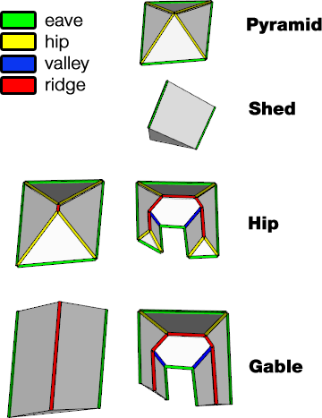
Street Selectors
Components adjacent to a street can be selected with the street.front selector, rear components can be selected with the street.back selector, and components in between front and back can be selected with the street.left and street.right selectors. street.side combines left and right components.
 |
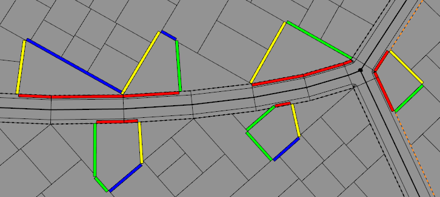 |
These selectors depend on the availability of the streetWidth attribute map; see Auto-generated street width attributes. If the attribute is not available, component selection falls back to the object.xxx selectors.
Related
Examples
Facade Selection / Face Split Details
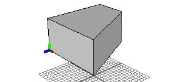
Lot --> extrude(5) color(1,1,1,0.75)
Let us split a mass model into its facades. Note the position and orientation of the pivot and scope (the annotated axes).
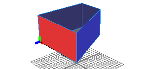
Lot -->
extrude(5)
comp(f) { right : color(1,1,0,0.75) Right.
| side : color(1,1,1,0.75) Side. }
Each face is now the geometry of a new shape. The scope and pivot depend on the face orientation. The x-axis points along the first edge and the z-axis points along the face normal. The z-dimension of the scope is zero.
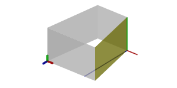
Lot -->
extrude(5)
comp(f,noAlign) { right : color(1,1,0,0.75) Right.
| side : color(1,1,1,0.75) Side. }
The pivot is kept when using the noAlign mode. The scope orientation does not change.
Selectors 1: Quadrant-based
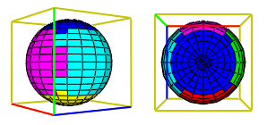
Sphere -->
comp(f) { top : color("#0000ff") X.
| bottom : color("#ffff00") X.
| front : color("#ff0000") X.
| back : color("#ff00ff") X.
| left : color("#00ffff") X.
| right : color("#00ff00") X. }
Selectors are demonstrated by using them to color the faces of a spherical geometry. The selection is relative to the local coordinate system (the shown scope).
Selectors 2: Angle to y-axis based
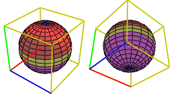
Sphere -->
comp(f) { horizontal : color("#0000ff") X.
| aslant : color("#ff0000") X.
| vertical : color("#ffff00") X.
| nutant : color("#ff00ff") X. }
Note the horizontal areas (blue) on the sphere's poles.
Logical selection expressions
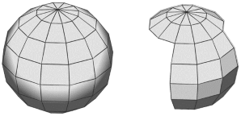
Sphere --> comp(f) { top || front = X. }
Static selectors can be used in a logical selector expression. Here both the top and front faces are combined into a single shape.
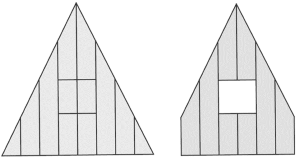
Triangle -->
comp(f) { geometry.area() > 1 && !inside : X. }
Here, only faces with a surface area greater than 1 and that are not inside are selected.
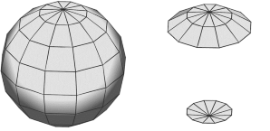
mySelectorFunc() =
geometry.isOriented(top) || geometry.nVertices() == 3
Sphere -->
comp(f) { mySelectorFunc() : X. }
Here, a custom function is used to select the top faces and all faces with exactly 3 vertices.
Index-based Selection
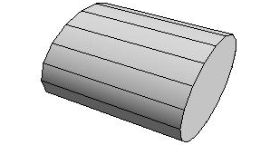
A mesh can also be disassembled into its components by addressing them directly by their index.
The indexing scheme is inherently encoded in the model itself!
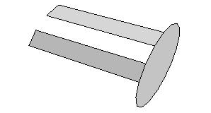
Tube -->
comp(f) { 0 : X.
| 2 : X.
| 4 : X. }
Here, only faces 0, 2 and 4 of the cylinder are selected.
Trim Planes
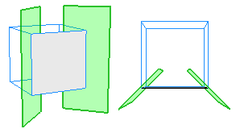
Start -->
s(10,10,10)
primitiveCube
comp(f) { 5 : X. }
At shared edges, trim planes (green) are inserted.
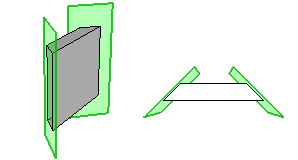
X --> s(15,'1, 2) center(xyz) primitiveCube
Inserted geometry is cut with the trim planes.
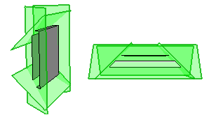
Start -->
s(10,10,10)
primitiveCube
set(trim.horizontal, true)
comp(f) { 5 : X. }
By default, horizontal trim planes are off. Enabling them before inserting the geometry gives a different result.
The Operator
Separating operator :
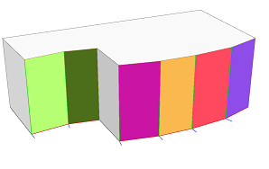
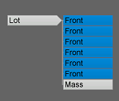
Lot -->
extrude(10)
comp(f) { front : color(rand,rand,rand)
Front.
| all = Mass. }
Using the : operator results in a new shape for each component selected by the selector. In the example above, a shape is created for each front face of the extruded geometry. Therefore, the Lot shape has six Front successors (plus one successor for the remaining faces in Mass). Each Front successor shape has its pivot and scope set up differently.
Combining operator =
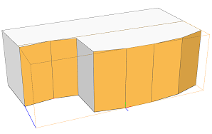
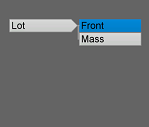
Lot -->
extrude(10)
comp(f) { front = color(rand,rand,rand)
Front.
| all = Mass. }
Using the = operator results in exactly one new shape for all components selected by the selector. In the example above, one Front shape is created for all six front faces of the extruded geometry. Therefore, the Lot shape has one Front successor. The pivot and scope are set up relative to the first selected front face.
Connecting operator =:
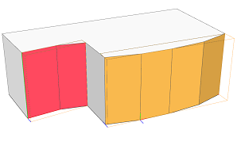
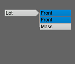
Lot -->
extrude(10)
comp(f) { front =: color(rand,rand,rand)
Front.
| all = Mass. }
Using the =: operator results in a new shape for each connected subset of all components selected by the selector. In the example above, two Front shapes are created for all six front faces of the extruded geometry. In each Front shape all faces are connected via shared edges. Therefore, the Lot shape has two Front successors. The pivot and scope in each successor shape is set up relative to its first face.
Border and Inside Selectors
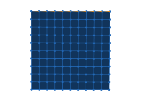
The picture on the left shows the initial shape. It is a subdivided plane, consisting of a number of faces.
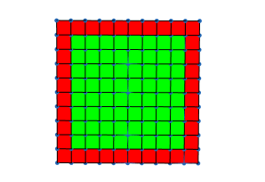
Init -->
comp(f) { border : FBorder | inside : FInside }
FBorder -->
color("#ff0000")
FInside -->
color("#00ff00")
The example selects the border and inside faces and colors them.
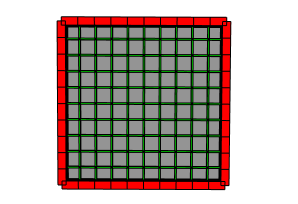
Init-->
comp(e) { border : EBorder | inside : EInside }
EBorder -->
s('1, 0.05, 0.05) t(0, '-0.5, 0)
color("#ff0000") primitiveCube
EInside -->
s('1, 0.01, 0.01) t(0, '-0.5, 0)
color("#00ff00") primitiveCube
Here, there border and inside edges are selected and colored cubes are inserted.
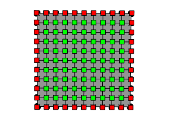
Init -->
comp(v) { border : VBorder | inside : VInside }
VBorder -->
s(0.05, 0.05, 0.05) t(-0.025, -0.025, -0.025)
color("#ff0000") primitiveCube
VInside -->
s(0.05, 0.05, 0.05) t(-0.025, -0.025, -0.025)
color("#00ff00") primitiveCube
Finally, the border and inside vertices are used to insert colored cubes.
isTagged Selector
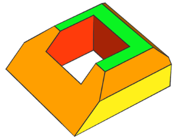
Init -->
envelope(normal,4, 0,45, 3,45, 2.5,50, 2,50)
ShowEnvelopeAutoTags
ShowEnvelopeAutoTags -->
comp(f) { isTagged("envelope.bottom") : Blue
| isTagged("envelope.side.base") : Yellow
| isTagged("envelope.side.slope") : Orange
| isTagged("envelope.side.inner") : Red
| isTagged("envelope.top") : Green }
This example colors the face components based on the face tags applied by the envelope operation.
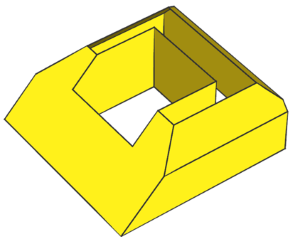
Init -->
envelope(normal,4, 0,45, 3,45, 2.5,50, 2,50)
comp(f) { isTagged("envelope.side") : Yellow }
Here, the tag query "envelope.side" is used to select and color all base, slope and inner side faces at once.
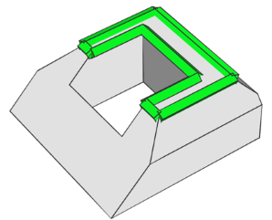
Init -->
envelope(normal,4, 0,45, 3,45, 2.5,50, 2,50)
comp(e) { isTagged("envelope.top") : Edge }
Edge -->
s('1, 0.5, 0.5) center(yz)
color("#09de1f") primitiveCube()
Here, the edges of the face tagged "envelope.top" are selected and colored cubes are inserted.
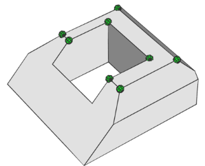
Init -->
envelope(normal,4, 0,45, 3,45, 2.5,50, 2,50)
comp(v) { isTagged("envelope.top") : Edge }
Edge -->
s(0.5, 0.5, 0.5) center(xyz)
color("#09de1f") primitiveSphere(8,6)
Here, the vertices of the face tagged "envelope.top" are selected and colored spheres are inserted.
Advanced Tag Selection
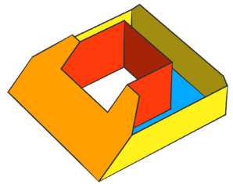
Init -->
envelope(normal,4, 0,45, 3,45, 2.5,50, 2,50)
comp(f) { isTagged("envelope.bottom", e)
: ShowEnvelopeAutoTags }
By using the e subcomponent selector, all faces that share an edge with a face tagged "envelope.bottom" or have an edge tagged as such, are selected.
Note that the face tagged "envelope.bottom" (blue) is selected as well.
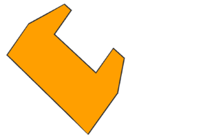
Init -->
envelope(normal,4, 0,45, 3,45, 2.5,50, 2,50)
comp(f) { isTagged("envelope.bottom", e) &&
isTagged("envelope.side.slope")
: ShowEnvelopeAutoTags }
This example selects all slope faces that are edge-adjacent to the bottom face.
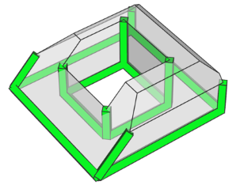
Init -->
envelope(normal,4, 0,45, 3,45, 2.5,50, 2,50)
comp(e) { isTagged("envelope.bottom", v) : Edge }
Edge -->
s('1, 0.5, 0.5) center(yz)
color("#09de1f") primitiveCube()
This example selects all edges that share a vertex with the bottom face and inserts colored cubes.
Edge Split Details
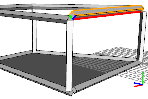
Lot --> extrude(3)
comp(e) { all : primitiveCube s('1, 0.25, 1) X. }
A building mass model is split into its edges, and the built-in cube model is inserted into each edge shape. The pivot of the new shape is positioned at one of the edge's vertices, and the alignment is as follows: the x-axis is parallel to the edge, the z-axis is the average of the neighboring face normals and the y-axis is normal to the two former ones. The scope has zero translation and rotation, and the sizes are (edge-length, 0, 0).
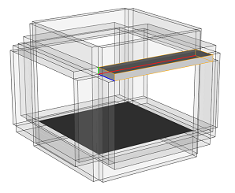
Lot --> extrude(3)
comp(fe) { all : primitiveCube s('1, 0.25, 1) X. }
A split into face edges creates more components, for each face the edges are considered separately. Edges are oriented wrt. face orientations. The pivot is now set to the edge's start vertex and the x-axis points in face orientation, the z-axis is pointing out of the face orthogonally to the edge and the face normal.
Vertex Split Details
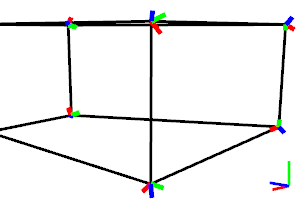
Lot -->
extrude(10)
MassModel
comp(v) { all : VShapes. }
A building mass model is split into its vertices.
The pivot of the new shape (the VShapes in the rule above) is set to the vertex position, and the alignment is as follows: the z-axis is the average of the neighboring face normals and the x- and y-axes are chosen such that they are all normal to each other.
The scope has zero translation, rotation and size.
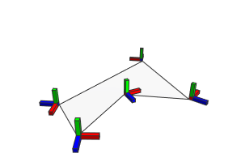
Lot -->
comp(fv) { all : VShapes. }
A polygon is split into its face vertices.
The pivot of the new shape (the VShapes in the rule above) is set to the vertex position, and the alignment is as follows: the x-axis is the tangent to the polygon, the z-axis points outside of the polygon and the y-axis is the face normal of the polygon.
The scope has zero translation, rotation and size.
Group Split Details

Lot -->
i("Orange_Tree.obj")
comp(g) { findFirst(geometry.materials,"Bark") : Trunk.
| all = set(material.opacity, 0.2) Foliage. }
A tree model is split into its groups.
Material Split Details
Lot -->
i("Orange_Tree.obj")
comp(m) { findFirst(geometry.materials,"Foliage") : Oranges.
| findFirst(geometry.materials,"Bark") : Trunk. }
A tree model is split into its materials. In this case groups and materials are the same.